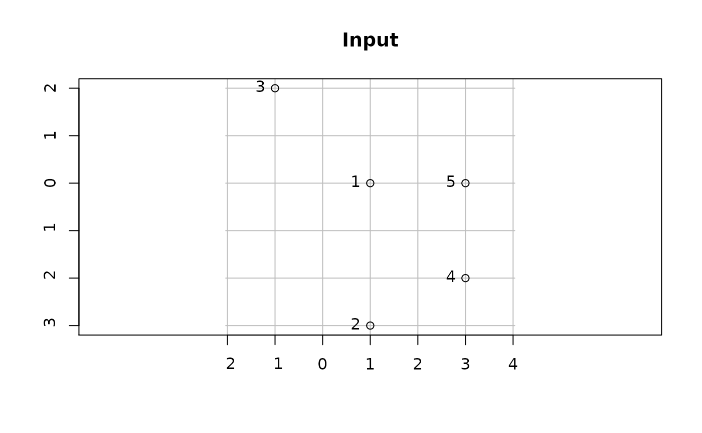
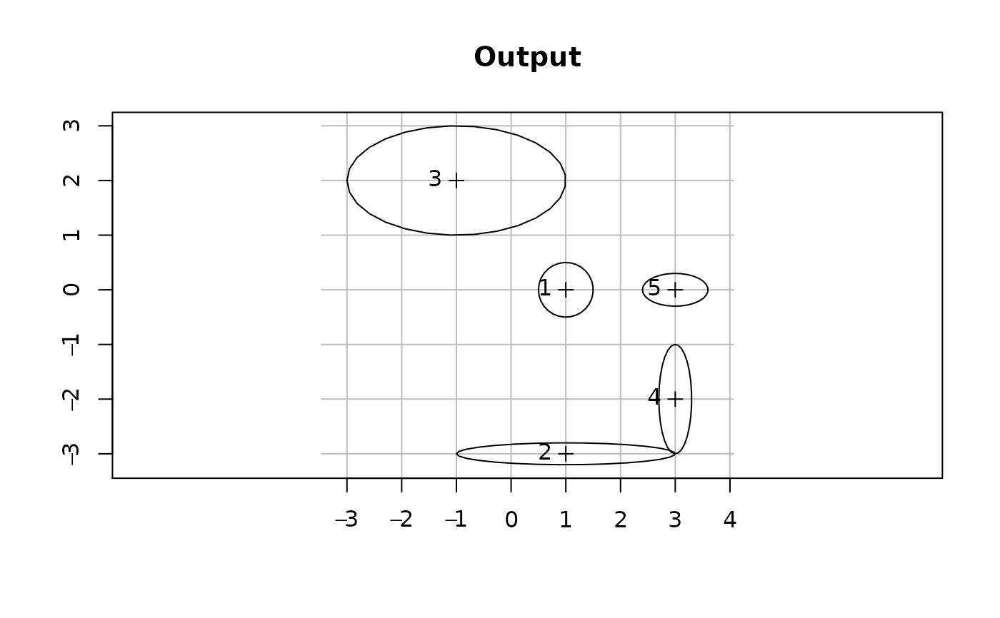

The function calculates ellipse polygons, given centroid locations and sizing on the x and y axes.
st_ellipse(pnt, ex, ey, res = 30)
| pnt | Object of class |
|---|---|
| ex | Size along x-axis, in CRS units |
| ey | Size along y-axis, in CRS units |
| res | Number of points the ellipse polygon consists of (default |
Object of class sfc (type "POLYGON") containing ellipse polygons
Based on StackOverflow answer by user fdetsch:
https://stackoverflow.com/questions/35841685/add-an-ellipse-on-raster-plot-in-r
# Sample data dat = data.frame( x = c(1, 1, -1, 3, 3), y = c(0, -3, 2, -2, 0), ex = c(0.5, 2, 2, 0.3, 0.6), ey = c(0.5, 0.2, 1, 1, 0.3), stringsAsFactors = FALSE ) dat = st_as_sf(dat, coords = c("x", "y")) dat#> Simple feature collection with 5 features and 2 fields #> Geometry type: POINT #> Dimension: XY #> Bounding box: xmin: -1 ymin: -3 xmax: 3 ymax: 2 #> CRS: NA #> ex ey geometry #> 1 0.5 0.5 POINT (1 0) #> 2 2.0 0.2 POINT (1 -3) #> 3 2.0 1.0 POINT (-1 2) #> 4 0.3 1.0 POINT (3 -2) #> 5 0.6 0.3 POINT (3 0)# Calculate ellipses el = st_ellipse(pnt = dat, ex = dat$ex, ey = dat$ey) # Plot 2 plot(el, graticule = TRUE, axes = TRUE, main = "Output")